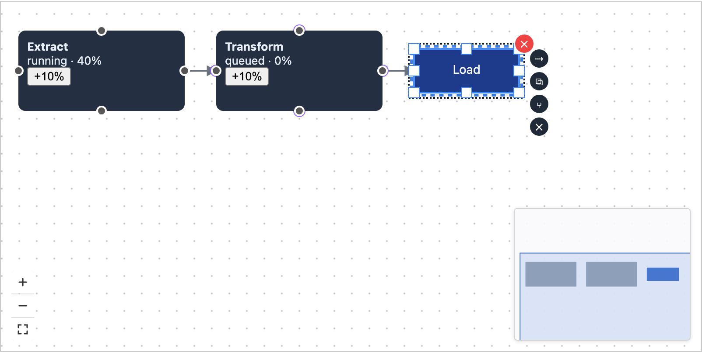

The Angular canvas draws an extra layer of outlines on top of the diagram: an orange box around nodes with a validation issue, a blue box around the node under the mouse, an orange dotted box around the selected node, and green boxes on valid targets while you draw a connection. Until now there was no setting for it, so an app that did not want them had to hide them with forced CSS. The pull request adds a [highlighterConfig] input: false turns the whole layer off, an object turns kinds on or off one by one.
Both shots are the same app built with the pull request, in the same state: Load clicked to select it, the mouse resting on Transform. The only difference is the input. Drag the slider to compare in place.

Before After[highlighterConfig]="false"
Counts are the overlay elements on the page in each shot. What stays matters as much as what goes: Load still shows that it is selected, with its own dashed border, resize handles and toolbar. Only the extra outline layer is gone, so users can still see what they selected.
/* No canvas input for HighlighterController */
:host ::ng-deep {
.grafloria-highlighter-validation,
.grafloria-highlighter-hover,
.grafloria-highlighter-selection,
.grafloria-highlighter-connect-target {
display: none !important;
pointer-events: none !important;
}
}
<grafloria-diagram-canvas
[highlighterConfig]="false">
</grafloria-diagram-canvas>
<!-- or keep some kinds -->
<grafloria-diagram-canvas
[highlighterConfig]="{ showHover: false }">
</grafloria-diagram-canvas>
The CSS version still drew the outlines and then hid them, and it depended on internal class names that could change. The input tells the canvas not to draw them at all.
| Check | Result | Detail |
|---|---|---|
| Read the code | Correct | The two names it imports are public in @grafloria/renderer, the four settings match the renderer's exactly, and nothing else in the component configures this layer, so the input cannot overwrite another setting. |
| Angular package tests | 665 pass | The whole suite, including the new test. |
| Does the new test catch a broken version? | Yes | With the "off" values flipped back to on, the test fails: it finds the selection outline still drawn. |
| Release build of the package | Builds | The same partial-Ivy build that is published to npm. |
| In a real browser | Works | The screenshots above: overlays drawn by default, none with false, no page errors. |
| Angular demo app, 106 routes | 106 / 106 | Every Angular demo, built from the pull request, paints, throws nothing, and matches its JavaScript original. |
| Merges onto main | Clean | Based on the current main, no conflicts. |
{ showHover: false } means "everything on except hover". That is a sensible rule, and the comment on the input says so.false. Validation, connect-target and the object form are not tested separately; they go through the same call, so this is minor.[highlighterConfig] and publish @grafloria/angular 0.13.6 so people can use it.